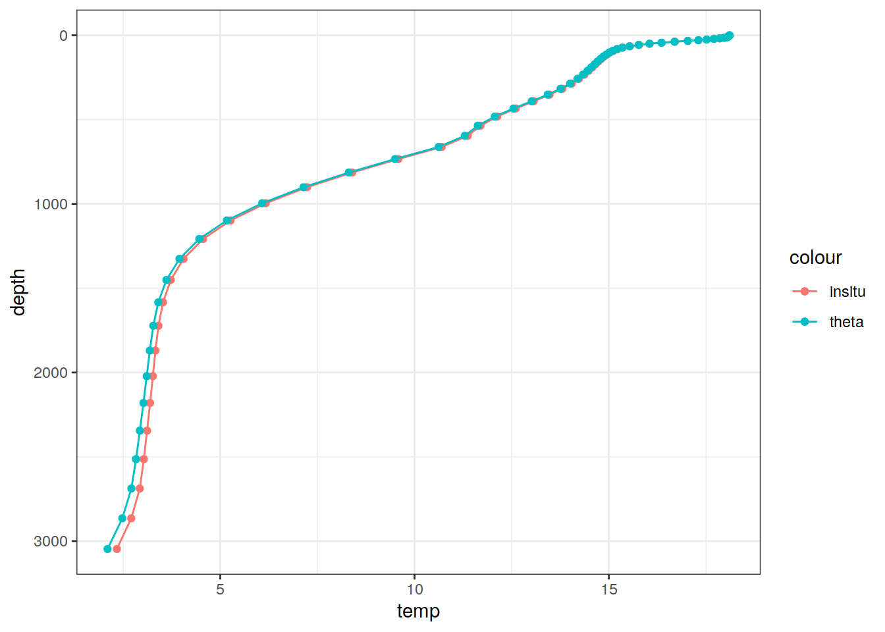

Last updated: 2022-05-10
Checks: 7 0
Knit directory: emlr_mod_preprocessing/
This reproducible R Markdown analysis was created with workflowr (version 1.7.0). The Checks tab describes the reproducibility checks that were applied when the results were created. The Past versions tab lists the development history.
Great! Since the R Markdown file has been committed to the Git repository, you know the exact version of the code that produced these results.
Great job! The global environment was empty. Objects defined in the global environment can affect the analysis in your R Markdown file in unknown ways. For reproduciblity it’s best to always run the code in an empty environment.
The command set.seed(20200707) was run prior to running the code in the R Markdown file. Setting a seed ensures that any results that rely on randomness, e.g. subsampling or permutations, are reproducible.
Great job! Recording the operating system, R version, and package versions is critical for reproducibility.
Nice! There were no cached chunks for this analysis, so you can be confident that you successfully produced the results during this run.
Great job! Using relative paths to the files within your workflowr project makes it easier to run your code on other machines.
Great! You are using Git for version control. Tracking code development and connecting the code version to the results is critical for reproducibility.
The results in this page were generated with repository version d43e8c0. See the Past versions tab to see a history of the changes made to the R Markdown and HTML files.
Note that you need to be careful to ensure that all relevant files for the analysis have been committed to Git prior to generating the results (you can use wflow_publish or wflow_git_commit). workflowr only checks the R Markdown file, but you know if there are other scripts or data files that it depends on. Below is the status of the Git repository when the results were generated:
Ignored files:
Ignored: .Rhistory
Ignored: .Rproj.user/
Untracked files:
Untracked: analysis/RECCAP2_flux_products.Rmd
Untracked: code/backup_analysis_scripts/
Untracked: code/reprex_read_nc_file.R
Unstaged changes:
Deleted: analysis/Cant_AD.Rmd
Deleted: analysis/Cant_CB.Rmd
Deleted: analysis/Climatology_A.Rmd
Deleted: analysis/Climatology_C.Rmd
Deleted: analysis/FESOM_REcoM_LR_Cant_AD.Rmd
Deleted: analysis/FESOM_REcoM_LR_Climatology_A.Rmd
Deleted: analysis/FESOM_REcoM_LR_GLODAP_subset_A_2021_annual.Rmd
Deleted: analysis/FESOM_REcoM_LR_Random_subset_A_2021_annual.Rmd
Deleted: analysis/GLODAP_subset_A.Rmd
Deleted: analysis/GLODAP_subset_A_2021.Rmd
Deleted: analysis/GLODAP_subset_A_2021_annual.Rmd
Deleted: analysis/GLODAP_subset_C.Rmd
Deleted: analysis/GLODAP_subset_C_2021.Rmd
Deleted: analysis/NorESM_Cant_AD.Rmd
Deleted: analysis/NorESM_Climatology_A.Rmd
Deleted: analysis/NorESM_GLODAP_subset_A_2021_annual.Rmd
Deleted: analysis/NorESM_Random_subset_A_2021_annual.Rmd
Deleted: analysis/ORCA025_Cant_AD.Rmd
Deleted: analysis/ORCA025_Climatology_A.Rmd
Deleted: analysis/ORCA025_GLODAP_subset_A_2021_annual.Rmd
Deleted: analysis/ORCA025_Random_subset_A_2021_annual.Rmd
Deleted: analysis/Random_subset_A.Rmd
Deleted: analysis/Random_subset_A_2021_annual.Rmd
Deleted: analysis/Random_subset_C.Rmd
Deleted: analysis/Random_subset_C_2021.Rmd
Modified: analysis/_site.yml
Deleted: analysis/read_CO2_atm.Rmd
Modified: code/Workflowr_project_managment.R
Note that any generated files, e.g. HTML, png, CSS, etc., are not included in this status report because it is ok for generated content to have uncommitted changes.
These are the previous versions of the repository in which changes were made to the R Markdown (analysis/Climatology_A_2007_all_models.Rmd) and HTML (docs/Climatology_A_2007_all_models.html) files. If you’ve configured a remote Git repository (see ?wflow_git_remote), click on the hyperlinks in the table below to view the files as they were in that past version.
| File | Version | Author | Date | Message |
|---|---|---|---|---|
| Rmd | d43e8c0 | jens-daniel-mueller | 2022-05-10 | rerun all with multi model subsetting |
# use only three basin to assign general basin mask
# ie this is not specific to the MLR fitting
basinmask <- basinmask %>%
filter(MLR_basins == "2") %>%
select(lat, lon, basin_AIP)Here we used annual output of cmorized (1x1) model with variable forcing (RECCAP2 RunA) in year 2007 as the predictor climatology. Predictors include:
# set name of model to be subsetted
model_ID <- "A"
# for loop across variables
variables <-
c("so", "thetao", "dissic", "talk", "o2", "no3", "po4", "si")
models <- list.files(path_cmorized)
models <-
models[!str_detect(models, pattern = "\\.")]
models <-
models[str_detect(
models,
pattern = c(
"CESM|CNRM|EC-Earth3|FESOM_REcoM_LR|MOM6-Princeton|MRI-ESM2-0|ORCA025-GEOMAR|ORCA1-LIM3-PISCES"
)
)]
# depth named lev, contains only depth levels not actual depth in m
# time ranges from 0-1154 (i.e only years 1980-83), yet length is 39
models <-
models[!str_detect(models, pattern = "CNRM")]
# time with offset 2110-01-01, yet length is 39
models <-
models[!str_detect(models, pattern = "EC-Earth3")]
# files chunked into decades
models <-
models[!str_detect(models, pattern = "ORCA025-GEOMAR")]
# "so" variable only NA's
models <-
models[!str_detect(models, pattern = "MOM6-Princeton")]# load python scripts
source_python(paste0(
path_functions,
"python_scripts/Gamma_GLODAP_python.py"
))# models <- models[2:5]
for (i_model in models) {
# i_model <- models[3]
print(i_model)
variables_available <-
list.files(path = paste0(path_cmorized, i_model),
pattern = paste0("_", model_ID, "_"))
variables_available <-
str_split(variables_available,
pattern = "_",
simplify = TRUE)[, 1]
variables_available <-
variables_available[variables_available %in% variables]
variables_available <- unique(variables_available)
for (i_variable in variables_available) {
# i_variable <- variables_available[1]
# read list of all files
file <-
list.files(path = paste0(path_cmorized, i_model),
pattern = paste0(i_variable, "_"))
file <-
file[str_detect(file, pattern = paste0("_", model_ID, "_"))]
print(file)
# read in data
variable_data <-
read_ncdf(
paste(paste0(path_cmorized, i_model),
file,
sep = "/"),
make_units = FALSE
# make_time = FALSE,
# ncsub = cbind(
# start = c(1, 1, 1, 28),
# count = c(NA, NA, NA, NA))
)
if (i_model == "CESM-ETHZ_3D_ALL_v20211122") {
variable_data <-
variable_data %>% slice(index = 28, along = "time_ann")
} else if (i_model == "FESOM_REcoM_LR_3D_all_v20211119") {
variable_data <-
variable_data %>% slice(index = 28, along = "Time")
} else if (i_model == "MRI-ESM2-0_3D_ALL_v20210830" &
i_variable == "si") {
variable_data <-
variable_data %>% slice(index = 1, along = "time")
} else {
variable_data <- variable_data %>% slice(index = 28, along = "time")
}
print(variable_data)
# convert to tibble
variable_data_tibble <- variable_data %>%
as_tibble()
# remove open link to nc file
rm(variable_data)
# remove na values
variable_data_tibble <-
variable_data_tibble %>%
filter(!is.na(!!sym(i_variable)))
# if (i_model == "CESM-ETHZ_3D_ALL_v20211122") {
# variable_data_tibble <- variable_data_tibble %>%
# rename(time = time_ann)
# }
if (i_model == "CNRM-ESM2-1_3D_ALL_v20211208") {
variable_data_tibble <- variable_data_tibble %>%
rename(depth = lev)
}
if (i_model == "FESOM_REcoM_LR_3D_all_v20211119") {
variable_data_tibble <- variable_data_tibble %>%
rename(
lat = Lat,
lon = Lon,
depth = Depth
# time = Time
)
# mutate(time = as.Date(time, origin = '1980-01-01'))
}
if (i_model == "MOM6-Princeton_3D_ALL_v20220125") {
variable_data_tibble <- variable_data_tibble %>%
rename(depth = z_l)
}
if (i_model == "MRI-ESM2-0_3D_ALL_v20210830") {
variable_data_tibble <- variable_data_tibble %>%
rename(depth = lev)
}
# harmonize longitudes
variable_data_tibble <- variable_data_tibble %>%
mutate(lon = if_else(lon < 20, lon + 360, lon))
# only consider model grids within basinmask
variable_data_tibble <-
inner_join(variable_data_tibble, basinmask) %>%
select(-basin_AIP)
# mutate variables
# variable_data_tibble <- variable_data_tibble %>%
# mutate(year = year(time)) %>%
# select(-time)
# print(unique(variable_data_tibble$year))
if (exists("climatology")) {
climatology <- full_join(climatology, variable_data_tibble)
}
if (!exists("climatology")) {
climatology <- variable_data_tibble
}
}
if (i_model == "FESOM_REcoM_LR_3D_all_v20211119") {
climatology <- climatology %>%
mutate(po4 = NA)
}
climatology <- climatology %>%
rename(
sal = so,
THETA = thetao,
tco2 = dissic,
talk = talk,
oxygen = o2,
nitrate = no3,
phosphate = po4,
silicate = si
)
climatology <- climatology %>%
mutate(depth = round(depth))
# In-situ temperature
climatology <- climatology %>%
mutate(temp = gsw_pt_from_t(
SA = sal,
t = THETA,
p = 10.1325,
p_ref = depth
))
# Example profile from North Atlantic Ocean
print(
climatology %>%
filter(lat == params_global$lat_Atl_profile,
lon == params_global$lon_Atl_section) %>%
ggplot() +
geom_line(aes(temp, depth, col = "insitu")) +
geom_point(aes(temp, depth, col = "insitu")) +
geom_line(aes(THETA, depth, col = "theta")) +
geom_point(aes(THETA, depth, col = "theta")) +
scale_y_reverse() +
labs(title = i_model) *
scale_color_brewer(palette = "Dark2", name = "Scale"))
# Unit conversion
# Model results are given in [mol m^-3^], whereas GLODAP data are in [µmol kg^-1^].
# For comparison, model results were converted from [mol m^-3^] to [µmol kg^-1^]
climatology <- climatology %>%
mutate(
rho = gsw_pot_rho_t_exact(
SA = sal,
t = temp,
p = depth,
p_ref = 10.1325
),
tco2 = tco2 * (1e+06 / rho),
talk = talk * (1e+06 / rho),
oxygen = oxygen * (1e+06 / rho),
nitrate = nitrate * (1e+06 / rho),
phosphate = phosphate * (1e+06 / rho),
silicate = silicate * (1e+06 / rho)
)
# AOU calculation
climatology <- climatology %>%
mutate(
oxygen_sat_m3 = gas_satconc(
S = sal,
t = temp,
P = 1.013253,
species = "O2"
),
oxygen_sat_kg = oxygen_sat_m3 * (1e+3 / rho),
AOU = oxygen_sat_kg - oxygen
) %>%
select(-oxygen_sat_kg, -oxygen_sat_m3)
# Neutral density calculation
# Neutral density gamma was calculated with a Python script provided by Serazin et al (2011)
# which performs a polynomial approximation of the original gamma calculation.
#calculate pressure from depth
climatology <- climatology %>%
mutate(CTDPRS = gsw_p_from_z(-depth,
lat))
# rename variables according to python script
climatology_gamma_prep <- climatology %>%
rename(LATITUDE = lat,
LONGITUDE = lon,
SALNTY = sal)
# calculate gamma
climatology_gamma_calc <-
calculate_gamma(climatology_gamma_prep)
# reverse variable naming
climatology <- climatology_gamma_calc %>%
select(-c(CTDPRS, THETA)) %>%
rename(
lat = LATITUDE,
lon = LONGITUDE,
sal = SALNTY,
gamma = GAMMA
)
climatology <- as_tibble(climatology)
rm(climatology_gamma_calc, climatology_gamma_prep)
# write_climatology_predictor_file
# select relevant columns
climatology <- climatology %>%
select(-c(rho))
# write csv file
climatology %>%
write_csv(paste0(path_preprocessing,
i_model,
"_climatology_runA_2007.csv"))
rm(climatology)
}[1] "CESM-ETHZ_3D_ALL_v20211122"
[1] "dissic_CESM-ETHZ_A_1_gr_1980-2018_v20211122.nc"
stars object with 3 dimensions and 1 attribute
attribute(s), summary of first 1e+05 cells:
Min. 1st Qu. Median Mean 3rd Qu. Max. NA's
dissic 1.53844 2.063345 2.121567 2.112429 2.172408 2.338243 34720
dimension(s):
from to offset delta refsys point values x/y
lon 1 360 0 1 WGS 84 NA NULL [x]
lat 1 180 -90 1 WGS 84 NA NULL [y]
depth 1 60 NA NA NA NA [60] 5,...,5375
[1] "no3_CESM-ETHZ_A_1_gr_1980-2018_v20211122.nc"
stars object with 3 dimensions and 1 attribute
attribute(s), summary of first 1e+05 cells:
Min. 1st Qu. Median Mean 3rd Qu. Max. NA's
no3 0 0.0006632728 0.003444489 0.007649824 0.0142726 0.02791386 34720
dimension(s):
from to offset delta refsys point values x/y
lon 1 360 0 1 WGS 84 NA NULL [x]
lat 1 180 -90 1 WGS 84 NA NULL [y]
depth 1 60 NA NA NA NA [60] 5,...,5375
[1] "o2_CESM-ETHZ_A_1_gr_1980-2018_v20211122.nc"
stars object with 3 dimensions and 1 attribute
attribute(s), summary of first 1e+05 cells:
Min. 1st Qu. Median Mean 3rd Qu. Max. NA's
o2 0.1949853 0.2097159 0.2504627 0.2672393 0.3263081 0.3876033 34720
dimension(s):
from to offset delta refsys point values x/y
lon 1 360 0 1 WGS 84 NA NULL [x]
lat 1 180 -90 1 WGS 84 NA NULL [y]
depth 1 60 NA NA NA NA [60] 5,...,5375
[1] "po4_CESM-ETHZ_A_1_gr_1980-2018_v20211122.nc"
stars object with 3 dimensions and 1 attribute
attribute(s), summary of first 1e+05 cells:
Min. 1st Qu. Median Mean 3rd Qu. Max. NA's
po4 0 9.326071e-05 0.0002925115 0.0005661223 0.0009729294 0.001930219 34720
dimension(s):
from to offset delta refsys point values x/y
lon 1 360 0 1 WGS 84 NA NULL [x]
lat 1 180 -90 1 WGS 84 NA NULL [y]
depth 1 60 NA NA NA NA [60] 5,...,5375
[1] "si_CESM-ETHZ_A_1_gr_1980-2018_v20211122.nc"
stars object with 3 dimensions and 1 attribute
attribute(s), summary of first 1e+05 cells:
Min. 1st Qu. Median Mean 3rd Qu. Max. NA's
si 0.0007265678 0.003127281 0.005360665 0.01249062 0.01393934 0.1167264 34720
dimension(s):
from to offset delta refsys point values x/y
lon 1 360 0 1 WGS 84 NA NULL [x]
lat 1 180 -90 1 WGS 84 NA NULL [y]
depth 1 60 NA NA NA NA [60] 5,...,5375
[1] "so_CESM-ETHZ_A_1_gr_1980-2018_v20211122.nc"
stars object with 3 dimensions and 1 attribute
attribute(s), summary of first 1e+05 cells:
Min. 1st Qu. Median Mean 3rd Qu. Max. NA's
so 17.77432 34.11263 34.72358 34.70072 35.68783 40.53304 34720
dimension(s):
from to offset delta refsys point values x/y
lon 1 360 0 1 WGS 84 NA NULL [x]
lat 1 180 -90 1 WGS 84 NA NULL [y]
depth 1 60 NA NA NA NA [60] 5,...,5375
[1] "talk_CESM-ETHZ_A_1_gr_1980-2018_v20211122.nc"
stars object with 3 dimensions and 1 attribute
attribute(s), summary of first 1e+05 cells:
Min. 1st Qu. Median Mean 3rd Qu. Max. NA's
talk 1.754645 2.341156 2.360543 2.36032 2.404855 2.692481 34720
dimension(s):
from to offset delta refsys point values x/y
lon 1 360 0 1 WGS 84 NA NULL [x]
lat 1 180 -90 1 WGS 84 NA NULL [y]
depth 1 60 NA NA NA NA [60] 5,...,5375
[1] "thetao_CESM-ETHZ_A_1_gr_1980-2018_v20211122.nc"
stars object with 3 dimensions and 1 attribute
attribute(s), summary of first 1e+05 cells:
Min. 1st Qu. Median Mean 3rd Qu. Max. NA's
thetao -1.782697 2.924084 16.20286 14.43304 25.42252 30.07337 34720
dimension(s):
from to offset delta refsys point values x/y
lon 1 360 0 1 WGS 84 NA NULL [x]
lat 1 180 -90 1 WGS 84 NA NULL [y]
depth 1 60 NA NA NA NA [60] 5,...,5375 [1] "FESOM_REcoM_LR_3D_all_v20211119"
[1] "dissic_FESOM_REcoM_LR_A_1_gr_1980-2018_v20211119.nc"
stars object with 3 dimensions and 1 attribute
attribute(s), summary of first 1e+05 cells:
Min. 1st Qu. Median Mean 3rd Qu. Max. NA's
dissic 1.397473 1.980928 2.056114 2.062378 2.139095 2.243466 33173
dimension(s):
from to offset delta refsys point values x/y
Lon 1 360 0 1 NA NA NULL [x]
Lat 1 180 -90 1 NA NA NULL [y]
Depth 1 46 NA NA NA NA [46] 0,...,5900
[1] "no3_FESOM_REcoM_LR_A_1_gr_1980-2018_v20211119.nc"
stars object with 3 dimensions and 1 attribute
attribute(s), summary of first 1e+05 cells:
Min. 1st Qu. Median Mean 3rd Qu. Max.
no3 1.154229e-05 3.847795e-05 0.002167632 0.007301974 0.01327029 0.04178772
NA's
no3 33173
dimension(s):
from to offset delta refsys point values x/y
Lon 1 360 0 1 NA NA NULL [x]
Lat 1 180 -90 1 NA NA NULL [y]
Depth 1 46 NA NA NA NA [46] 0,...,5900
[1] "o2_FESOM_REcoM_LR_A_1_gr_1980-2018_v20211119.nc"
stars object with 3 dimensions and 1 attribute
attribute(s), summary of first 1e+05 cells:
Min. 1st Qu. Median Mean 3rd Qu. Max. NA's
o2 0.1862063 0.2125652 0.2526134 0.2630829 0.3142638 0.367201 33173
dimension(s):
from to offset delta refsys point values x/y
Lon 1 360 0 1 NA NA NULL [x]
Lat 1 180 -90 1 NA NA NULL [y]
Depth 1 46 NA NA NA NA [46] 0,...,5900
[1] "si_FESOM_REcoM_LR_A_1_gr_1980-2018_v20211119.nc"
stars object with 3 dimensions and 1 attribute
attribute(s), summary of first 1e+05 cells:
Min. 1st Qu. Median Mean 3rd Qu. Max.
si 1.656723e-06 2.832228e-05 9.510469e-05 0.00372529 0.0008885778 0.06004048
NA's
si 33173
dimension(s):
from to offset delta refsys point values x/y
Lon 1 360 0 1 NA NA NULL [x]
Lat 1 180 -90 1 NA NA NULL [y]
Depth 1 46 NA NA NA NA [46] 0,...,5900
[1] "so_FESOM_REcoM_LR_A_1_gr_1980-2018_v20211119.nc"
stars object with 3 dimensions and 1 attribute
attribute(s), summary of first 1e+05 cells:
Min. 1st Qu. Median Mean 3rd Qu. Max. NA's
so 18.7434 33.80206 34.3102 34.31283 35.22783 39.38908 33173
dimension(s):
from to offset delta refsys point values x/y
Lon 1 360 0 1 NA NA NULL [x]
Lat 1 180 -90 1 NA NA NULL [y]
Depth 1 46 NA NA NA NA [46] 0,...,5900
[1] "talk_FESOM_REcoM_LR_A_1_gr_1980-2018_v20211119.nc"
stars object with 3 dimensions and 1 attribute
attribute(s), summary of first 1e+05 cells:
Min. 1st Qu. Median Mean 3rd Qu. Max. NA's
talk 1.336164 2.276783 2.30378 2.29198 2.317252 2.571417 33173
dimension(s):
from to offset delta refsys point values x/y
Lon 1 360 0 1 NA NA NULL [x]
Lat 1 180 -90 1 NA NA NULL [y]
Depth 1 46 NA NA NA NA [46] 0,...,5900
[1] "thetao_FESOM_REcoM_LR_A_1_gr_1980-2018_v20211119.nc"
stars object with 3 dimensions and 1 attribute
attribute(s), summary of first 1e+05 cells:
Min. 1st Qu. Median Mean 3rd Qu. Max. NA's
thetao -1.891329 2.555371 15.80864 14.07006 24.94776 29.80794 33173
dimension(s):
from to offset delta refsys point values x/y
Lon 1 360 0 1 NA NA NULL [x]
Lat 1 180 -90 1 NA NA NULL [y]
Depth 1 46 NA NA NA NA [46] 0,...,5900 
[1] "MRI-ESM2-0_3D_ALL_v20210830"
[1] "dissic_MRI-ESM2-0_A_1_gr_1980-2018_v20210830.nc"
stars object with 3 dimensions and 1 attribute
attribute(s), summary of first 1e+05 cells:
Min. 1st Qu. Median Mean 3rd Qu. Max. NA's
dissic 0.4188846 2.060656 2.124996 2.114551 2.183622 2.333048 31002
dimension(s):
from to offset delta refsys point values x/y
lon 1 360 0 1 WGS 84 NA NULL [x]
lat 1 180 -90 1 WGS 84 NA NULL [y]
lev 1 61 NA NA NA FALSE [0,2),...,[6500,6550)
[1] "no3_MRI-ESM2-0_A_1_gr_1980-2018_v20210830.nc"
stars object with 3 dimensions and 1 attribute
attribute(s), summary of first 1e+05 cells:
Min. 1st Qu. Median Mean 3rd Qu. Max.
no3 -0.0001392347 1.282122e-05 0.002570029 0.008234143 0.01692723 0.05066701
NA's
no3 31002
dimension(s):
from to offset delta refsys point values x/y
lon 1 360 0 1 WGS 84 NA NULL [x]
lat 1 180 -90 1 WGS 84 NA NULL [y]
lev 1 61 NA NA NA FALSE [0,2),...,[6500,6550)
[1] "o2_MRI-ESM2-0_A_1_gr_1980-2018_v20210830.nc"
stars object with 3 dimensions and 1 attribute
attribute(s), summary of first 1e+05 cells:
Min. 1st Qu. Median Mean 3rd Qu. Max. NA's
o2 0.1736174 0.2113317 0.2527393 0.2675103 0.3226389 0.3992555 31002
dimension(s):
from to offset delta refsys point values x/y
lon 1 360 0 1 WGS 84 NA NULL [x]
lat 1 180 -90 1 WGS 84 NA NULL [y]
lev 1 61 NA NA NA FALSE [0,2),...,[6500,6550)
[1] "po4_MRI-ESM2-0_A_1_gr_1980-2018_v20210830.nc"
stars object with 3 dimensions and 1 attribute
attribute(s), summary of first 1e+05 cells:
Min. 1st Qu. Median Mean 3rd Qu.
po4 4.106879e-06 7.300017e-05 0.0002601839 0.0006378438 0.001257896
Max. NA's
po4 0.004509379 31002
dimension(s):
from to offset delta refsys point values x/y
lon 1 360 0 1 WGS 84 NA NULL [x]
lat 1 180 -90 1 WGS 84 NA NULL [y]
lev 1 61 NA NA NA FALSE [0,2),...,[6500,6550)
[1] "si_MRI-ESM2-0_A_1_gr_1980-1980_v20210830.nc"
stars object with 3 dimensions and 1 attribute
attribute(s), summary of first 1e+05 cells:
Min. 1st Qu. Median Mean 3rd Qu. Max. NA's
si 0.0004158035 0.00200341 0.003626204 0.01160255 0.009417075 0.09425249 31002
dimension(s):
from to offset delta refsys point values x/y
lon 1 360 0 1 WGS 84 NA NULL [x]
lat 1 180 -90 1 WGS 84 NA NULL [y]
lev 1 61 NA NA NA FALSE [0,2),...,[6500,6550)
[1] "so_MRI-ESM2-0_A_1_gr_1980-2018_v20210830.nc"
stars object with 3 dimensions and 1 attribute
attribute(s), summary of first 1e+05 cells:
Min. 1st Qu. Median Mean 3rd Qu. Max. NA's
so 6.063694 34.13027 34.58277 34.49589 35.52933 40.81738 31002
dimension(s):
from to offset delta refsys point values x/y
lon 1 360 0 1 WGS 84 NA NULL [x]
lat 1 180 -90 1 WGS 84 NA NULL [y]
lev 1 61 NA NA NA FALSE [0,2),...,[6500,6550)
[1] "talk_MRI-ESM2-0_A_1_gr_1980-2018_v20210830.nc"
stars object with 3 dimensions and 1 attribute
attribute(s), summary of first 1e+05 cells:
Min. 1st Qu. Median Mean 3rd Qu. Max. NA's
talk 0.402038 2.355891 2.375069 2.364472 2.425962 2.793969 31002
dimension(s):
from to offset delta refsys point values x/y
lon 1 360 0 1 WGS 84 NA NULL [x]
lat 1 180 -90 1 WGS 84 NA NULL [y]
lev 1 61 NA NA NA FALSE [0,2),...,[6500,6550)
[1] "thetao_MRI-ESM2-0_A_1_gr_1980-2018_v20210830.nc"
stars object with 3 dimensions and 1 attribute
attribute(s), summary of first 1e+05 cells:
Min. 1st Qu. Median Mean 3rd Qu. Max. NA's
thetao -1.743968 2.44228 15.7754 14.28007 25.47853 30.01714 31002
dimension(s):
from to offset delta refsys point values x/y
lon 1 360 0 1 WGS 84 NA NULL [x]
lat 1 180 -90 1 WGS 84 NA NULL [y]
lev 1 61 NA NA NA FALSE [0,2),...,[6500,6550) [1] "ORCA1-LIM3-PISCES_3D_ALL_v20211215"
[1] "dissic_ORCA1-LIM3-PISCES_A_1_gr_1980-2018_v20211215.nc"
stars object with 3 dimensions and 1 attribute
attribute(s), summary of first 1e+05 cells:
Min. 1st Qu. Median Mean 3rd Qu. Max. NA's
dissic 0.6356738 2.047529 2.106403 2.107058 2.175867 2.607979 30015
dimension(s):
from to offset delta refsys point values x/y
lon 1 360 0 1 WGS 84 NA NULL [x]
lat 1 180 -90 1 WGS 84 NA NULL [y]
depth 1 75 NA NA NA FALSE [0,1.023907),...,[5800,6004.229)
[1] "no3_ORCA1-LIM3-PISCES_A_1_gr_1980-2018_v20211215.nc"
stars object with 3 dimensions and 1 attribute
attribute(s), summary of first 1e+05 cells:
Min. 1st Qu. Median Mean 3rd Qu. Max.
no3 3.094286e-07 2.920019e-05 0.003260584 0.00814951 0.01467556 0.03648942
NA's
no3 30015
dimension(s):
from to offset delta refsys point values x/y
lon 1 360 0 1 WGS 84 NA NULL [x]
lat 1 180 -90 1 WGS 84 NA NULL [y]
depth 1 75 NA NA NA FALSE [0,1.023907),...,[5800,6004.229)
[1] "o2_ORCA1-LIM3-PISCES_A_1_gr_1980-2018_v20211215.nc"
stars object with 3 dimensions and 1 attribute
attribute(s), summary of first 1e+05 cells:
Min. 1st Qu. Median Mean 3rd Qu. Max. NA's
o2 0.1961508 0.2091869 0.2505452 0.2691502 0.3308462 0.436595 30015
dimension(s):
from to offset delta refsys point values x/y
lon 1 360 0 1 WGS 84 NA NULL [x]
lat 1 180 -90 1 WGS 84 NA NULL [y]
depth 1 75 NA NA NA FALSE [0,1.023907),...,[5800,6004.229)
[1] "po4_ORCA1-LIM3-PISCES_A_1_gr_1980-2018_v20211215.nc"
stars object with 3 dimensions and 1 attribute
attribute(s), summary of first 1e+05 cells:
Min. 1st Qu. Median Mean 3rd Qu.
po4 6.226775e-07 0.0001672927 0.0004754509 0.0007070058 0.001179957
Max. NA's
po4 0.008807107 30015
dimension(s):
from to offset delta refsys point values x/y
lon 1 360 0 1 WGS 84 NA NULL [x]
lat 1 180 -90 1 WGS 84 NA NULL [y]
depth 1 75 NA NA NA FALSE [0,1.023907),...,[5800,6004.229)
[1] "si_ORCA1-LIM3-PISCES_A_1_gr_1980-2018_v20211215.nc"
stars object with 3 dimensions and 1 attribute
attribute(s), summary of first 1e+05 cells:
Min. 1st Qu. Median Mean 3rd Qu. Max. NA's
si 0.0008841127 0.001731399 0.003098852 0.01157017 0.01246982 0.08248688 30015
dimension(s):
from to offset delta refsys point values x/y
lon 1 360 0 1 WGS 84 NA NULL [x]
lat 1 180 -90 1 WGS 84 NA NULL [y]
depth 1 75 NA NA NA FALSE [0,1.023907),...,[5800,6004.229)
[1] "so_ORCA1-LIM3-PISCES_A_1_gr_1980-2018_v20211215.nc"
stars object with 3 dimensions and 1 attribute
attribute(s), summary of first 1e+05 cells:
Min. 1st Qu. Median Mean 3rd Qu. Max. NA's
so 5.547729 33.98625 34.35794 34.32555 35.19701 38.63853 30015
dimension(s):
from to offset delta refsys point values x/y
lon 1 360 0 1 WGS 84 NA NULL [x]
lat 1 180 -90 1 WGS 84 NA NULL [y]
depth 1 75 NA NA NA FALSE [0,1.023907),...,[5800,6004.229)
[1] "talk_ORCA1-LIM3-PISCES_A_1_gr_1980-2018_v20211215.nc"
stars object with 3 dimensions and 1 attribute
attribute(s), summary of first 1e+05 cells:
Min. 1st Qu. Median Mean 3rd Qu. Max. NA's
talk 0.6077311 2.330598 2.354492 2.350225 2.383013 2.943625 30015
dimension(s):
from to offset delta refsys point values x/y
lon 1 360 0 1 WGS 84 NA NULL [x]
lat 1 180 -90 1 WGS 84 NA NULL [y]
depth 1 75 NA NA NA FALSE [0,1.023907),...,[5800,6004.229)
[1] "thetao_ORCA1-LIM3-PISCES_A_1_gr_1980-2018_v20211215.nc"
stars object with 3 dimensions and 1 attribute
attribute(s), summary of first 1e+05 cells:
Min. 1st Qu. Median Mean 3rd Qu. Max. NA's
thetao -1.902045 2.372617 16.12284 14.44789 25.67046 30.61959 30015
dimension(s):
from to offset delta refsys point values x/y
lon 1 360 0 1 WGS 84 NA NULL [x]
lat 1 180 -90 1 WGS 84 NA NULL [y]
depth 1 75 NA NA NA FALSE [0,1.023907),...,[5800,6004.229) Below, following subsets of the climatology are plotted for all relevant predictors:
climatology_files <- fs::dir_ls(path_preprocessing)
climatology <- climatology_files %>%
map_dfr(read_csv, .id = "model")
climatology <- climatology %>%
mutate(model = str_remove(model, path_preprocessing),
model = str_remove(model, "_climatology_runA_2007.csv"))# define plotting variables
vars <- c(
"tco2",
"talk",
"sal",
"nitrate",
"phosphate",
"silicate",
"oxygen",
"temp",
"AOU",
"gamma"
)
# i_var <- vars[1]
for (i_var in vars) {
# i_var <- vars[1]
# plot sections
print(p_section_global(df = climatology %>%
filter(model == models[1]),
var = i_var))
}
sessionInfo()R version 4.1.2 (2021-11-01)
Platform: x86_64-pc-linux-gnu (64-bit)
Running under: openSUSE Leap 15.3
Matrix products: default
BLAS: /usr/local/R-4.1.2/lib64/R/lib/libRblas.so
LAPACK: /usr/local/R-4.1.2/lib64/R/lib/libRlapack.so
locale:
[1] LC_CTYPE=en_US.UTF-8 LC_NUMERIC=C
[3] LC_TIME=en_US.UTF-8 LC_COLLATE=en_US.UTF-8
[5] LC_MONETARY=en_US.UTF-8 LC_MESSAGES=en_US.UTF-8
[7] LC_PAPER=en_US.UTF-8 LC_NAME=C
[9] LC_ADDRESS=C LC_TELEPHONE=C
[11] LC_MEASUREMENT=en_US.UTF-8 LC_IDENTIFICATION=C
attached base packages:
[1] stats graphics grDevices utils datasets methods base
other attached packages:
[1] geosphere_1.5-14 oce_1.5-0 gsw_1.0-6 reticulate_1.23
[5] lubridate_1.8.0 stars_0.5-5 sf_1.0-5 abind_1.4-5
[9] colorspace_2.0-2 marelac_2.1.10 shape_1.4.6 ggforce_0.3.3
[13] metR_0.11.0 scico_1.3.0 patchwork_1.1.1 collapse_1.7.0
[17] forcats_0.5.1 stringr_1.4.0 dplyr_1.0.7 purrr_0.3.4
[21] readr_2.1.1 tidyr_1.1.4 tibble_3.1.6 ggplot2_3.3.5
[25] tidyverse_1.3.1 workflowr_1.7.0
loaded via a namespace (and not attached):
[1] ellipsis_0.3.2 class_7.3-20 rprojroot_2.0.2 fs_1.5.2
[5] rstudioapi_0.13 proxy_0.4-26 farver_2.1.0 bit64_4.0.5
[9] fansi_1.0.2 xml2_1.3.3 knitr_1.37 polyclip_1.10-0
[13] jsonlite_1.7.3 broom_0.7.11 dbplyr_2.1.1 png_0.1-7
[17] compiler_4.1.2 httr_1.4.2 backports_1.4.1 assertthat_0.2.1
[21] Matrix_1.4-0 fastmap_1.1.0 cli_3.1.1 later_1.3.0
[25] tweenr_1.0.2 htmltools_0.5.2 tools_4.1.2 gtable_0.3.0
[29] glue_1.6.0 rappdirs_0.3.3 Rcpp_1.0.8 cellranger_1.1.0
[33] jquerylib_0.1.4 RNetCDF_2.5-2 vctrs_0.3.8 lwgeom_0.2-8
[37] xfun_0.29 ps_1.6.0 rvest_1.0.2 lifecycle_1.0.1
[41] ncmeta_0.3.0 getPass_0.2-2 MASS_7.3-55 scales_1.1.1
[45] vroom_1.5.7 hms_1.1.1 promises_1.2.0.1 parallel_4.1.2
[49] yaml_2.2.1 sass_0.4.0 stringi_1.7.6 highr_0.9
[53] e1071_1.7-9 checkmate_2.0.0 rlang_1.0.2 pkgconfig_2.0.3
[57] evaluate_0.14 lattice_0.20-45 SolveSAPHE_2.1.0 labeling_0.4.2
[61] bit_4.0.4 processx_3.5.2 tidyselect_1.1.1 here_1.0.1
[65] seacarb_3.3.0 magrittr_2.0.1 R6_2.5.1 generics_0.1.1
[69] DBI_1.1.2 pillar_1.6.4 haven_2.4.3 whisker_0.4
[73] withr_2.4.3 units_0.7-2 sp_1.4-6 modelr_0.1.8
[77] crayon_1.4.2 KernSmooth_2.23-20 utf8_1.2.2 tzdb_0.2.0
[81] rmarkdown_2.11 grid_4.1.2 readxl_1.3.1 data.table_1.14.2
[85] callr_3.7.0 git2r_0.29.0 reprex_2.0.1 digest_0.6.29
[89] classInt_0.4-3 httpuv_1.6.5 munsell_0.5.0 bslib_0.3.1